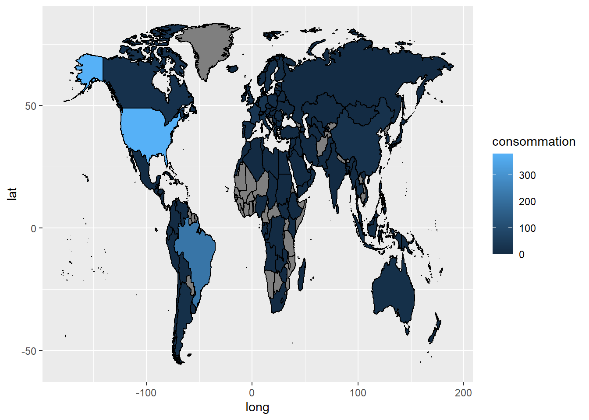
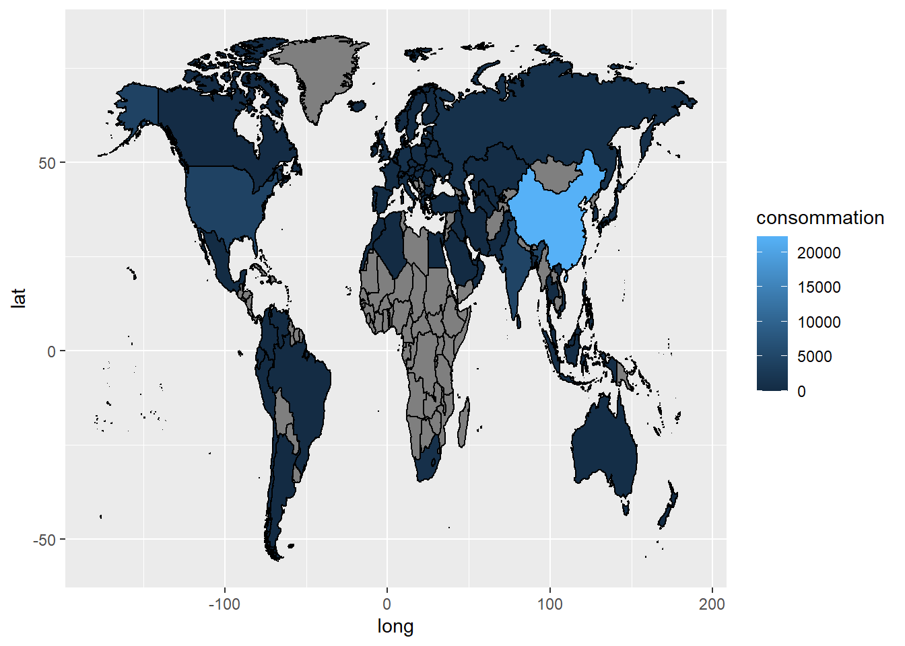

Chapter 5 Analyse de la population, de la production de nourriture en 2020 et de la consommation d’énergie en 2015
5.1 POPULATION
library(flexdashboard)
library(tidyverse)
library(readxl)
library(tidyselect)
library(countrycode)
library(ggthemes)
library(gapminder)
population<-read_excel("WPP2019_POP_F01_1_TOTAL_POPULATION_BOTH_SEXES_UN.xlsx", skip = 16, na="...") |>
select(1:3, Type,"1950":"2020" ) |>
pivot_longer(cols=5:75,
names_to ="annee",
values_to = "population") |>
mutate(population=population*1000) |>
rename(region=3)
population_country<-population |>
select(annee, population, region) |>
mutate(country=countrycode(region, origin = "country.name", destination = "country.name")) |>
drop_na(country) |>
mutate(annee=(as.numeric(annee))) |>
filter(annee == 2020) ## Warning in countrycode_convert(sourcevar = sourcevar, origin = origin, destination = dest, : Some values were not matched unambiguously: Africa, Asia, AUSTRALIA/NEW ZEALAND, Caribbean, Central America, CENTRAL AND SOUTHERN ASIA, Central Asia, Eastern Africa, EASTERN AND SOUTH-EASTERN ASIA, Eastern Asia, Eastern Europe, Europe, EUROPE, EUROPE AND NORTHERN AMERICA, Geographic regions, High-income countries, Land-locked Developing Countries (LLDC), Latin America and the Caribbean, LATIN AMERICA AND THE CARIBBEAN, Least developed countries, Less developed regions, Less developed regions, excluding least developed countries, Low-income countries, Lower-middle-income countries, Melanesia, Micronesia, Middle-income countries, Middle Africa, More developed regions, No income group available, Northern Africa, NORTHERN AFRICA AND WESTERN ASIA, Northern America, NORTHERN AMERICA, Northern Europe, Oceania, OCEANIA (EXCLUDING AUSTRALIA AND NEW ZEALAND), Polynesia, Small Island Developing States (SIDS), South-Eastern Asia, South America, Southern Africa, Southern Asia, Southern Europe, SUB-SAHARAN AFRICA, Sustainable Development Goal (SDG) regions, UN development groups, Upper-middle-income countries, Western Africa, Western Asia, Western Europe, WORLD, World Bank income groups## Warning in countrycode_convert(sourcevar = sourcevar, origin = origin, destination = dest, : Some strings were matched more than once, and therefore set to <NA> in the result: AUSTRALIA/NEW ZEALAND,Australia,New Zealand; OCEANIA (EXCLUDING AUSTRALIA AND NEW ZEALAND),Australia,New Zealand#la carte
world_map <- map_data("world") |>
mutate(country=countrycode(region, origin = "country.name", destination = "country.name"))## Warning in countrycode_convert(sourcevar = sourcevar, origin = origin, destination = dest, : Some values were not matched unambiguously: Ascension Island, Azores, Barbuda, Bonaire, Canary Islands, Chagos Archipelago, Grenadines, Heard Island, Madeira Islands, Micronesia, Saba, Saint Martin, Siachen Glacier, Sint Eustatius, Virgin Islands#fusionner les données lat/long avec les données gapminder
population_carte <- world_map |>
mutate(group=factor(group),
region=factor(region)) |>
full_join(population_country,by="country")
test_population <- population_country |>
distinct(country)
# carte choroplethe
ggplot(population_carte)+
aes(long,lat,group=group)+
geom_polygon(aes(fill=population),colour="black")#de nombreux pays ne s'affichent pas, car ils ne sont pas écrits pareil
pays_population_carte <- population_carte |>
distinct(region.y)
pays_worldmap <- world_map |>
select(region) |>
distinct(region)
# on extrait la liste des pays présents dans pays_population_carte et absents dans world_map
pays_absents_worldmap <- anti_join(pays_population_carte,pays_worldmap,
by=c("region.y"="region"))
# on extrait la liste des pays dans world_map et absents dans gapminder
pays_absents_pays_population_carte <- anti_join(pays_worldmap,pays_population_carte,
by=c("region"="region.y"))5.2 NOURRITURE
5.2.1 Chart Distribution de la production de nourriture par pays en 2020
#Partie food
food<-read_delim("Production_Crops_Livestock_E_All_Data.csv",
locale=locale(encoding="ISO-8859-1")) |>
select(-ends_with("F")) |>
pivot_longer(cols=Y1961:Y2020,
names_to="annee",
values_to="Production_nourriture") |>
mutate(annee=parse_number(annee)) |>
filter(annee ==2020)## Rows: 77523 Columns: 127
## ── Column specification ────────────────────────────────────────────────────────
## Delimiter: ","
## chr (64): Area, Item, Element, Unit, Y1961F, Y1962F, Y1963F, Y1964F, Y1965F,...
## dbl (63): Area Code, Item Code, Element Code, Y1961, Y1962, Y1963, Y1964, Y1...
##
## ℹ Use `spec()` to retrieve the full column specification for this data.
## ℹ Specify the column types or set `show_col_types = FALSE` to quiet this message.food_country <-food |>
filter(Element=="Production") |>
filter(str_detect(Item,"Total")|str_detect(Item,"Primary")) |>
rename(country=Area) |>
rename(Area_code="Area Code") |>
mutate(Area_code=(as.factor(Area_code))) |>
mutate(Area_code=countrycode(country, origin = "country.name", destination = "iso3c")) |>
drop_na(Area_code) |>
mutate(country=countrycode(Area_code, origin = "iso3c", destination = "country.name")) ## Warning in countrycode_convert(sourcevar = sourcevar, origin = origin, destination = dest, : Some values were not matched unambiguously: Africa, Americas, Asia, Australia and New Zealand, Belgium-Luxembourg, Caribbean, Central America, Central Asia, Czechoslovakia, Eastern Africa, Eastern Asia, Eastern Europe, Europe, European Union (27), Land Locked Developing Countries, Least Developed Countries, Low Income Food Deficit Countries, Melanesia, Micronesia, Middle Africa, Net Food Importing Developing Countries, Northern Africa, Northern America, Northern Europe, Oceania, Polynesia, Serbia and Montenegro, Small Island Developing States, South-eastern Asia, South America, Southern Africa, Southern Asia, Southern Europe, Western Africa, Western Asia, Western Europe, World, Yugoslav SFR## Warning in countrycode_convert(sourcevar = sourcevar, origin = origin, destination = dest, : Some strings were matched more than once, and therefore set to <NA> in the result: Australia and New Zealand,AUS,NZLtest_food_country <- food_country |>
distinct(country)
#fusionner les données lat/long avec les données gapminder
food_carte <- world_map |>
mutate(group=factor(group),
region=factor(region)) |>
full_join(food_country,by="country")
# carte choroplethe
ggplot(food_carte)+
aes(long,lat,group=group)+
geom_polygon(aes(fill=Production_nourriture),colour="black")
Column
5.3 Energie par types
5.3.1 Distribution de l’energie de type low_carbon_consumption par pays en 2015
#Partie Energie
#la carte
world_map <- map_data("world") |>
mutate(country=countrycode(region, origin = "country.name", destination = "country.name")) ## Warning in countrycode_convert(sourcevar = sourcevar, origin = origin, destination = dest, : Some values were not matched unambiguously: Ascension Island, Azores, Barbuda, Bonaire, Canary Islands, Chagos Archipelago, Grenadines, Heard Island, Madeira Islands, Micronesia, Saba, Saint Martin, Siachen Glacier, Sint Eustatius, Virgin Islandsenergy<-read_delim("owid-energy-data__OWID.csv")## Rows: 17470 Columns: 124
## ── Column specification ────────────────────────────────────────────────────────
## Delimiter: ","
## chr (2): iso_code, country
## dbl (122): year, coal_prod_change_pct, coal_prod_change_twh, gas_prod_change...
##
## ℹ Use `spec()` to retrieve the full column specification for this data.
## ℹ Specify the column types or set `show_col_types = FALSE` to quiet this message.seqTp_energy <- energy |>
select(1:3,contains("consumption")) |>
filter(year >= 1961 & year <= 2020) |>
pivot_longer(cols=4:16,
names_to="type_energie",
values_to="consommation") |>
mutate(types = case_when(str_detect(type_energie,"coal|gas|oil")~"fossil_fuel_consumption",
str_detect(type_energie,"nuclear|biofuel|hydro|other_renewable|solar|wind")~"low_carbon_consumption",
TRUE~NA_character_)) |>
mutate(sources_energy = case_when(str_detect(type_energie,"biofuel")~"biofuel",
str_detect(type_energie,"coal")~"coal",
str_detect(type_energie,"wind")~"wind",
str_detect(type_energie,"gas")~"gas",
str_detect(type_energie,"hydro")~"hydro",
str_detect(type_energie,"solar")~"solar",
str_detect(type_energie,"nuclear")~"nuclear",
str_detect(type_energie,"oil")~"oil",
str_detect(type_energie,"other_renewable")~"other_renewable_consumption"
))
energy_country<- seqTp_energy |>
rename(annee="year") |>
mutate(annee=(as.numeric(annee))) |>
drop_na(types)|>
mutate(iso_code=countrycode(country, origin = "country.name", destination = "iso3c")) |>
drop_na(iso_code) |>
mutate(country=countrycode(iso_code, origin = "iso3c", destination = "country.name")) ## Warning in countrycode_convert(sourcevar = sourcevar, origin = origin, destination = dest, : Some values were not matched unambiguously: Africa, Asia Pacific, Central America, CIS, Czechoslovakia, Eastern Africa, Europe, Europe (other), Kosovo, Middle Africa, Middle East, Netherlands Antilles, North America, OPEC, Other Asia & Pacific, Other Caribbean, Other CIS, Other Middle East, Other Northern Africa, Other South America, Other Southern Africa, South & Central America, Timor, United States Pacific Islands, Western Africa, World, Yugoslaviatest_energy_country <- energy_country |>
distinct(country)
#fusionner les données lat/long avec les données gapminder
energy_carte <- world_map |>
mutate(group=factor(group),
region=factor(region)) |>
full_join(energy_country,by="country")
# carte choroplethe
#type = low_carbon_consumption
ggplot(energy_carte |>
filter(annee==2015) |>
filter(types =="low_carbon_consumption"))+
aes(long,lat,group=group)+
geom_polygon(aes(fill=consommation),colour="black")